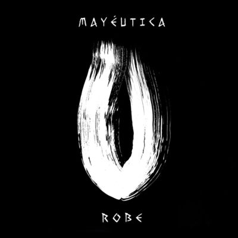

Discos

Lo Que Aletea En Nuestras Cabezas
Destrozares
Bienvenidos Al Temporal

Roberto Iniesta nació en Plasencia, Extremadura, el 16 de mayo de 1962. Tras dejar los estudios en tercero de B.U.P. y trabajar con su padre, comienza a escribir canciones a los veinte años y monta su primer grupo, Dosis Letal, junto a Luisma, Juano, Paco Doniga, Zósimo «Zosi» Pascual. Durante estos años también estuvo trabajando en un puesto de chucherías.
Influenciado por bandas como AC/DC o Leño, formó en 1987 la banda Extremoduro. Al no disponer del dinero requerido para poder costearse una grabación, decidieron ir vendiendo papeletas a todo el que quisiera contribuir (a mil pesetas cada una), que valdrían por una copia de la maqueta cuando esta fuera grabada y editada. Llegaron a vender 250 de estos boletos, por lo que se encerraron en los estudios Duplimatic en enero de 1989 y editaron una tirada de mil copias de esta primera maqueta titulada Rock transgresivo, la cual fue distribuida por la región extremeña. No fue hasta 1996 cuando se catapultó a la fama con su álbum Agila, el mismo año que recibe la noticia del fallecimiento de su padre. La entrada a la banda del guitarrista y productor Iñaki «Uoho» Antón, perteneciente por aquel entonces al grupo Platero y Tú, supuso un punto de inflexión en la trayectoria de la banda.
El 9 de junio de 2015 se publicó su primer álbum en solitario Lo que aletea en nuestras cabezas. Se anunció que su etapa estará ligada a la de Extremoduro, por lo que la banda no se verá afectada. El 18 de noviembre de 2016, lanza su segundo álbum de estudio en solitario, de título Destrozares, canciones para el final de los tiempos. En 2017 recorrió la Península, promocionando sus discos en solitario, en la gira Bienvenidos al temporal, tras su confirmación el 7 de marzo, momento en el que le fue entregado el segundo disco de oro a la nueva formación. El 30 de abril de 2021 sale a la venta su tercer disco de estudio en solitario titulado Mayéutica.
Músico placentino, comienza su andadura musical en el coro del colegio, donde despierta su pasión por la percusión. En la actualidad centra su actividad artística en Ayahuasca, Iphunk (funk experimental) y claro está, Lo que aletea en nuestras cabezas. Más proyectos y colaboraciones: Markos Bayón el Autognomo, La habitación sin Nombre, Farraguas, Niño Indigo, Los Niños de los Ojos Rojos, Manguaré, Mu Zen Trío, Con lo puesto, Black Dog…
Como pianista y acordeonista ha tocado con grupos y cantantes como Nando Juglar, Acetre, Pilar Boyero, La Húngara, Los Marismeños, The Funkestein, The SoulMakers, Debarro, Joseán Moreno, Manu Herrera, Rubén Rubio, Hometown o Janette entre otros. Desde hace años mantiene una estrecha relación profesional y personal con David, Carlos, Alber, Loren y Woody, con los que ha compartido multitud de proyectos, grabaciones, actuaciones en directo y, sobre todo, muy buenos ratos.
En 2018, se une a la agrupación RADIX, con quienes ha actuado en varios ciclos musicales de flamenco. Además, ha intervenido en el Festival Ibérico de Badajoz en numerosas ocasiones con distintos grupos de cámara. En su trayectoria ha colaborado con diferentes bandas y artistas como Dimenssion, Sínkope, El Jose, Cira, Osvaldo Jiménez o Mamen Navia; también ha participado en la grabación de algunas bandas sonoras de largometrajes como “knockout” o de videojuegos con la productora The Game Kitchen.
En 2017 realiza una gran gira con Robe por todo el territorio nacional tocando tanto en los más importantes teatros como en recintos abiertos. Estrenando en cines de toda España el directo, “Bienvenidos al temporal” con un concierto completo de la gira grabado en Wizink Center de Madrid, El Palau de la Música de Barcelona y el Teatro Romano de Mérida. Es el compositor de la música original de obras de Teatro como “El Último Amor de Lorca” de Miguel Murillo o el arreglista del nuevo espectáculo de Raquel Palma, Cuando Manda el Corazón.
Cantante y compositor. Ha compuesto música para teatro, radio y spots publicitarios. Realizó para la productora «Love the Frame» la grabación y creación de sonidos y efectos de sala (Foley) para la película “No te supe perder” estrenada en 2018. Actualmente codirige y presenta, junto a Oscar Trigoso, El Garito, programa dedicado a la difusión de la música extremeña en Canal Extremadura Radio. Bulo es su último proyecto musical, junto a Woody Amores, Dave Lerman y Alber Fuentes.
Guitarrista y productor. En 2016 volvió a Sínkope, banda extremeña de la que ya formó parte 15 años antes, con quienes ha trabajado en los últimos tres discos hasta la fecha: El Parque de los Poetas (2017), Adicción Limitada(2019) y Por Pensar le dio al Hombre (2020). Banda con la ha girado todos estos años por los festivales más importantes del país. En el 2020 produjo el vídeo benéfico de Sínkope El Carro de la Vida (versión acústica) junto a El Drogas, Kutxi Romero, Ara Malikian, Fernando Madina de Reincidentes, Los Porretas, Aurora Beltrán, entre otros…